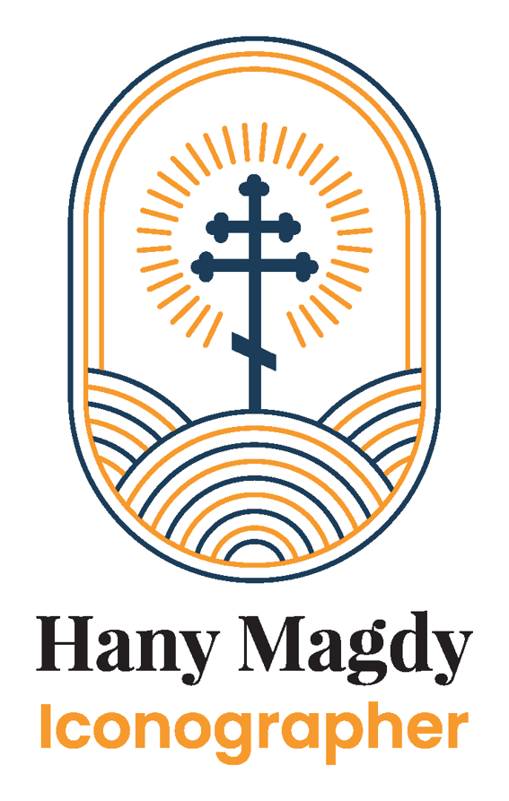

Hany
Magdy
Iconographer

Iconographer
Hany Magdy
Sacred Byzantine and Coptic icons painted in egg tempera, acrylic and gold leaf, plus classical studies, portraits and printmaking. Fine Arts graduate, Minia University. Based in Cairo.
Learn moreFeatured work
Icons and sacred art


